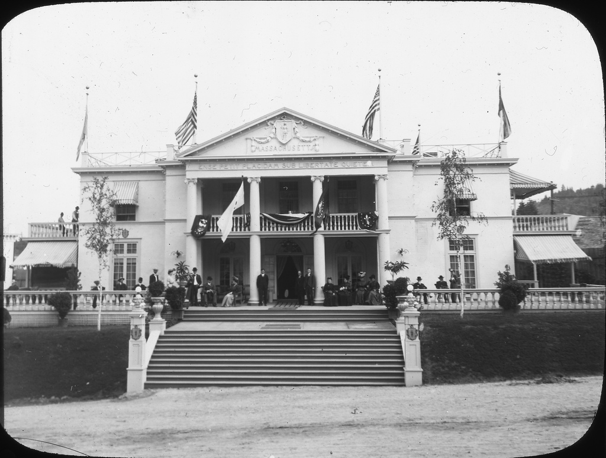

Massachusetts Building
Location in 1905: 45.53624427, -122.70759836
Current Location: 45.51775973, -122.59505689
(Former, actually)
After the exposition closed it was dismantled and re-erected on the north slope
of Mt Tabor. It has since been demolished. (Or possibly burned down)
